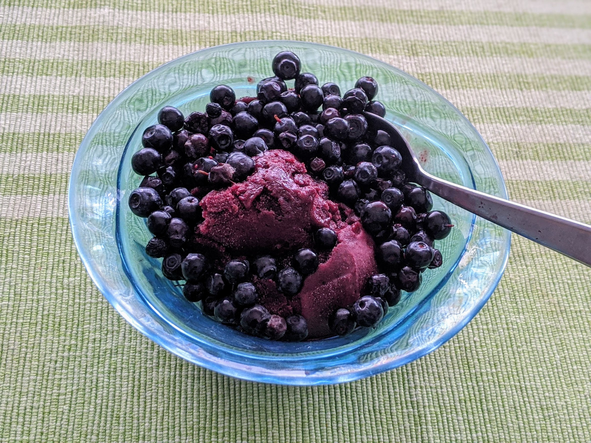

..@..♦.D.

|
Présentation 
|
Blog
|
Recettes
|

Ici avec des myrtilles sauvages
Pour un petit litre de glace :
Note : le sirop d'agave (ou nectar d'agave) ne se trouve pas au rayon sirop ou jus de fruits ; c'est un genre d'équivalent vegan du miel, en général placé pas loin dans les supermarchés. On en trouve facilement dans les magasins bio.